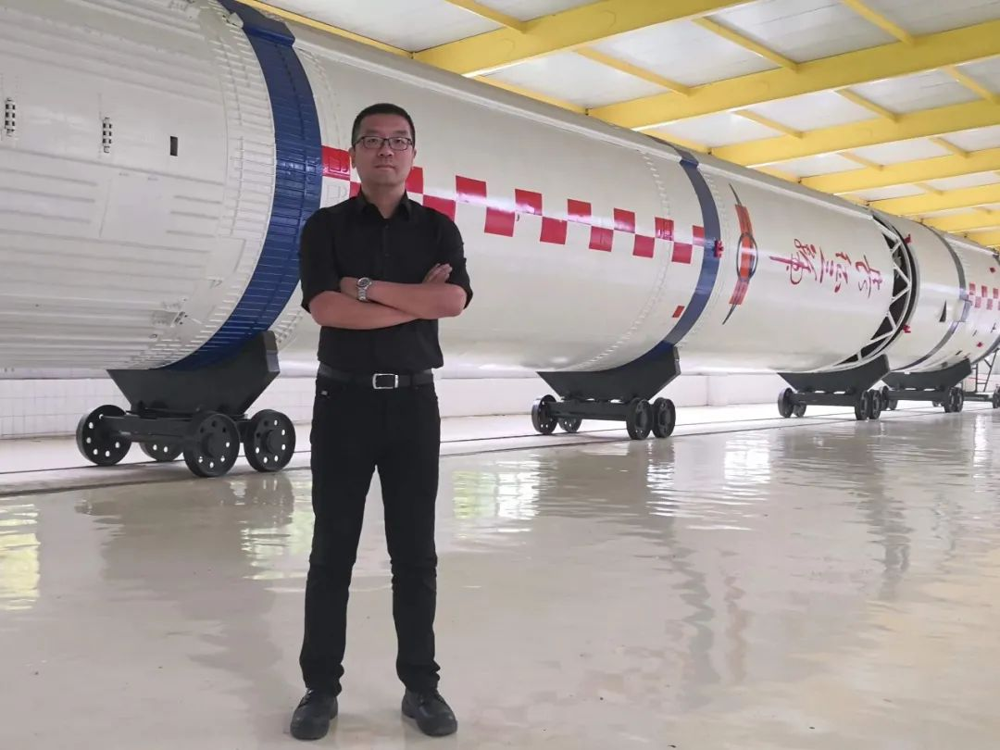
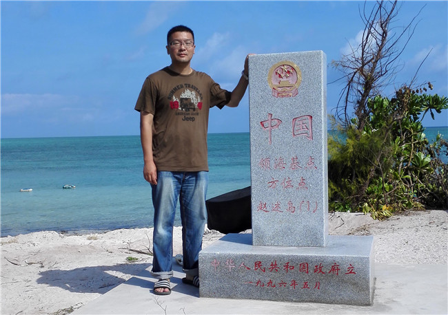

脚印👣土地
旅途起源
社会实践
待定
Event
待定
待定
待定
待定
待定
待定
脚印·大地
寰宇·星梦
南海·海蓝
捍守·海疆
志愿·永兴
古色·书香
闯荡·创新
生态·自然
希冀·未来
脚步👣丈量大地
Welcome
这是一趟
的旅途


Professor 刘波
籍贯
: 山东青岛
成就
:
南开大学电光学院教授，副院长
1
中国光学学会光学测试委员会委员
2
国家863计划项目评审专家
3
等
研究方向
: 光纤通信与传感技术
实践经历
:
建立银屿南开书屋
登陆永兴岛，探寻垃圾处理厂与海水淡化设施
前往琼崖一大旧址进行参观学习
海洋温盐深参数测温
在永乐平台上开展海试实验
祭奠西沙群岛自卫反击战中壮烈牺牲烈士
开展了深海海底光缆声学传感的观测
武警海南总队海口支队机动四中队共训
在三沙市永兴岛做核酸检测志愿者等
QR Matrix
脚印·大地
NKU官微